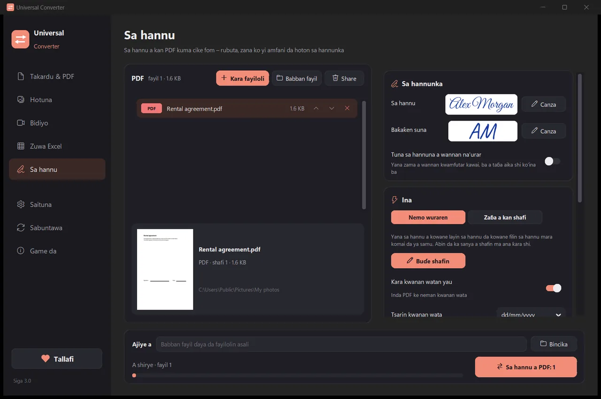

Sa hannu a kan PDF
Yi sa hannunka sau ɗaya: rubuta sunanka ka zaɓi salo, zana shi da linzamin kwamfuta ko yatsa, ko yi amfani da hotonsa a kan takarda. Universal Converter yana nemo layukan sa hannu da filayen sa hannu marasa komai, ko ka danna ko ka taɓa shafin inda ya kamata ya tafi. Yana ajiye kwafin da aka sa wa hannu kuma yana barin na asali yadda yake. Wannan sa hannu ne na lantarki da ake iya gani, ba sa hannu na dijital mai takardar shaida ba.
Yadda ake shigarwa da sabuntawa
- Buɗe .dmg da ka sauke kuma ka ja Universal Converter zuwa Applications.
- Buɗe manhajar. A karon farko macOS zai toshe ta saboda Apple bai sa mata hannu ba: danna Done.
- Buɗe System Settings > Privacy & Security, gungura ƙasa, danna Open Anyway kuma ka shigar da kalmar sirrinka. Sau ɗaya kawai za ka yi haka.
Sabuntawa: idan ka ba da izini lokacin da manhajar ta fara buɗewa, tana duba sababbin siga duk lokacin da ta fara, tana tabbatar da sa hannunsu na dijital kuma tana shigar da su lokacin da ka zaɓa.
Yadda ake shigarwa da sabuntawa
- Danna “Sauke don Android” a wayarka.
- Buɗe fayil ɗin da aka sauke. Idan Android ta tambaya, ba wa burauzarka ko mai sarrafa fayil izinin shigar da manhajoji.
- Danna Install.
Sabuntawa: manhajar tana dubawa kusan sau ɗaya a rana kuma tana gaya maka idan sabuwar siga ta shirya. Sauke ta haka nan kuma ka shigar da ita a kan tsohuwar; ana kiyaye saitunanka.
Yadda ake yi
- Buɗe Universal Converter kuma ka zaɓi Sa hannu a hagu.
- Ja fayilolinka ko dukan babban fayil cikin taga, ko danna “Ƙara fayiloli”.
- Danna Canza kusa da Sa hannu don yin sa hannunka, sannan zaɓi Nemo wuraren, ko Zaɓa a kan shafi ka danna inda zai tafi.
- Danna maɓallin sa hannu. Ana ajiye kowane fayil a matsayin suna_signed.pdf kusa da na asali ko a babban fayil da ka zaɓa.

Me yasa ba tare da intanet ba?
Universal Converter yana yin aikin a na'urarka. Fayilolinka suna nan a ɓoye, manyan fayiloli ba matsala ba ne, kuma yana aiki ba tare da intanet ba.
Ƙarin abubuwan da zai iya yi
- Canza PDF zuwa Word
- Canza takardun Word zuwa PDF
- Haɗa fayiloli da yawa zuwa PDF ɗaya
- Matse PDF zuwa girman da ka zaɓa
- Canza shafukan PDF zuwa hotunan JPG
- Mayar da takardar da aka duba zuwa fayil ɗin Word da za a iya gyarawa
- Canza hotuna tsakanin JPG, PNG, WEBP da ƙari
- Canza girman hotuna ko rage su zuwa girman fayil
- Haɗa hotuna zuwa PDF ɗaya
- Kwafi rubutu daga hoto (OCR)
- Matse bidiyo ba tare da loda shi ba
- Canza bidiyo tsakanin MP4, MKV, WebM, MOV da AVI
- Ajiye sautin bidiyo a matsayin MP3
- Yi GIF daga bidiyo
- Fitar da teburi daga PDF zuwa Excel
- Canza PDF na bayanan banki zuwa Excel
- Fitar da teburi daga takardun kuɗi na PDF zuwa Excel
- Cike fom na PDF